项目作品集
聚焦交互实现 · 沉淀前端积累
项目一：体检系统管理后台
项目时间：2023.11 - 2026.04
项目概述
这是一个基于 Vue3 + TypeScript + Element Plus 构建的 PC
端体检管理系统后台。系统面向体检中心日常运营场景，涵盖体检预约排期、医生诊台工作台、基础数据字典维护、精细化权限控制等核心业务模块。项目采用前后端分离架构，前端通过异步请求与后端服务进行数据交互，并利用
Vuex 进行全局状态管理，集中管控字典数据、用户权限等公共资源，致力于为体检中心提供高效、稳定、易维护的数字化管理平台。
👥 人员分布
后端开发：2人
前端开发：3人 （含本人）
🎯 我的角色
前端核心开发 / 架构升级 / 公共状态管理
我的责任
- 公共数据状态管理：负责系统基础字典、全局配置等公共数据的异步加载方案设计，将数据规范化存入 Vuex 进行统一分发与维护，减少重复请求，保障各模块数据源的实时性与一致性。
- 项目框架升级：主导前端框架的版本迭代与工程化升级，优化构建配置与依赖管理，提升项目可维护性。
- 核心业务模块协作：与后端紧密配合，深度参与体检预约排期、医生诊台、字典维护、权限维护等功能模块的前端开发，从接口联调、数据结构设计到交互逻辑实现，确保功能落地。
- 项目优化建议：对现有系统进行技术审查与体验分析，主动提出性能优化、功能完善及交互改进方案，推动项目质量提升。
项目业绩
📈
项目收益
项目已在高尚体检中心正式上线运行，替代了其原有的老旧管理模式，实现了体检预约、医生诊台、收费登记等核心环节的数字化，有效提升了体检中心的日常运营效率。项目具备向其他体检中心推广复用的潜力，离职前正持续推进中。
项目已在高尚体检中心正式上线运行，替代了其原有的老旧管理模式，实现了体检预约、医生诊台、收费登记等核心环节的数字化，有效提升了体检中心的日常运营效率。项目具备向其他体检中心推广复用的潜力，离职前正持续推进中。
⚙️ 我的贡献
- 基础架构优化：针对系统登录后需集中请求大量字典数据导致页面长时间阻塞的问题，主导将同步串行加载方案改造为异步并发请求，在确保字典数据完整存入 Vuex 的前提下，使登录后页面可立即完成渲染，用户无需等待即可正常操作，显著提升了首屏加载体验。
- 核心业务攻坚：在体检登记模块中，针对多折扣叠加场景下价格计算逻辑混乱、原生浮点数计算出现精度丢失等痛点，主导将全部金额计算逻辑重构为字符串运算，从根本上杜绝了 0.1 + 0.2 ≠ 0.3 之类的精度问题，保障了计费准确性，避免了因计算偏差引发的财务纠纷。
- 全流程功能交付：与后端团队紧密配合，深度参与体检预约排期、医生诊台、字典维护、权限维护等功能模块的接口联调与前端实现，确保功能按照业务需求按时高质量交付。
🌟 我的收获
- 技术层面：深刻了前端异步并发控制与全局状态管理的最优实践，能够根据业务场景灵活设计数据加载策略；对前端浮点数精度陷阱有了深入理解，熟练掌握了使用字符串运算处理金融级计算的可靠方案。
- 思维层面：培养了从用户体验和系统健壮性角度审视技术方案的习惯，学会了在"功能实现"与"性能优化"之间寻找平衡点，并积累了将复杂业务规则转化为清晰代码逻辑的分析能力。
- 协作层面：在解决繁琐业务问题的过程中，提升了与后端协同排查问题、制定统一数据口径的沟通能力。
📸 系统界面预览（点击图片可放大查看）
以下为体检系统后台部分界面示意，点击任意图片可全屏预览。

登录页面

单位登记
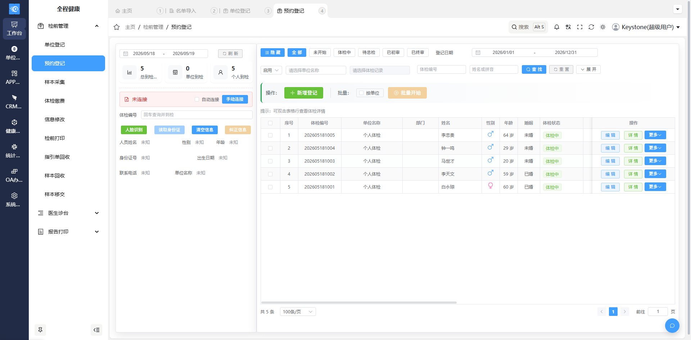
预约登记
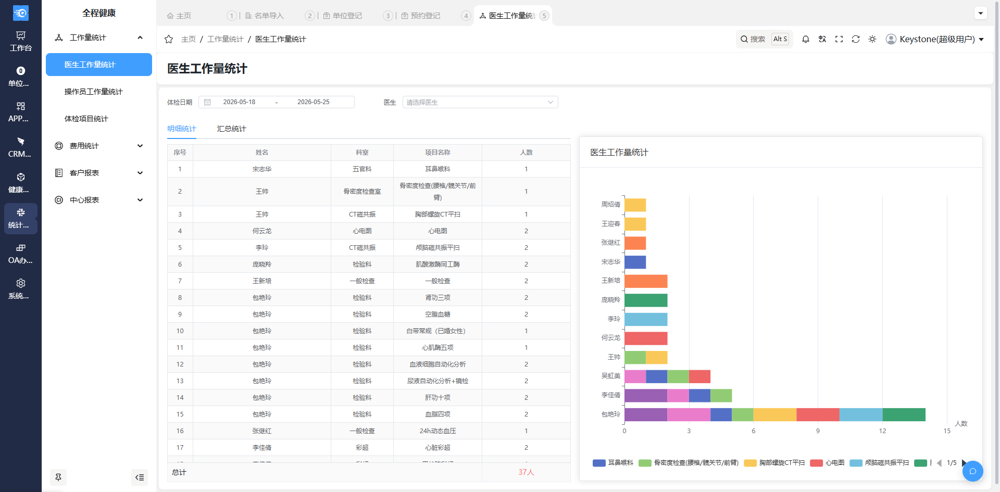
工作量统计
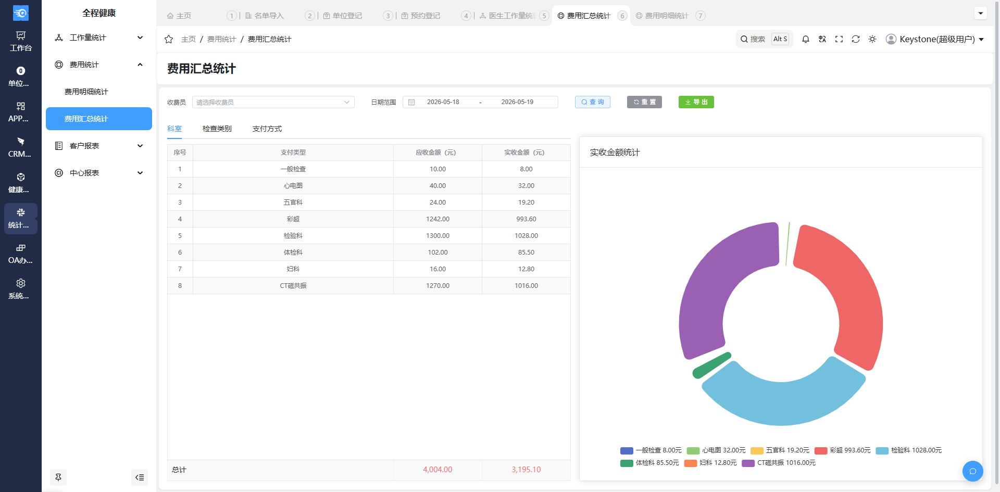
费用统计
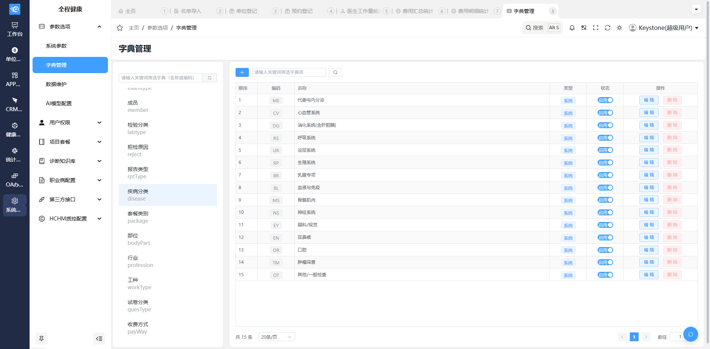
字典管理
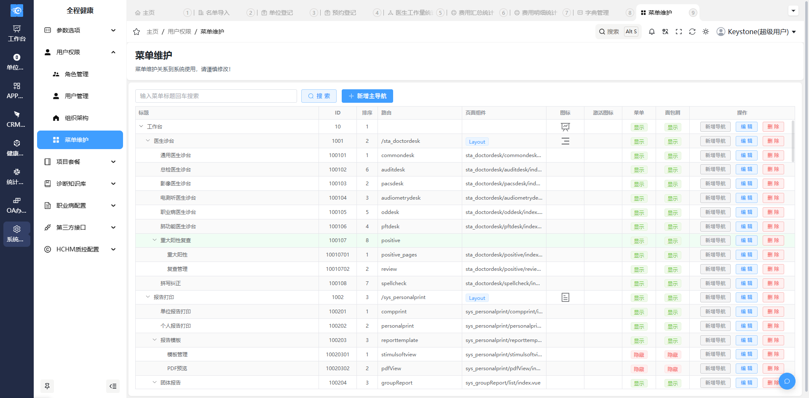
菜单维护
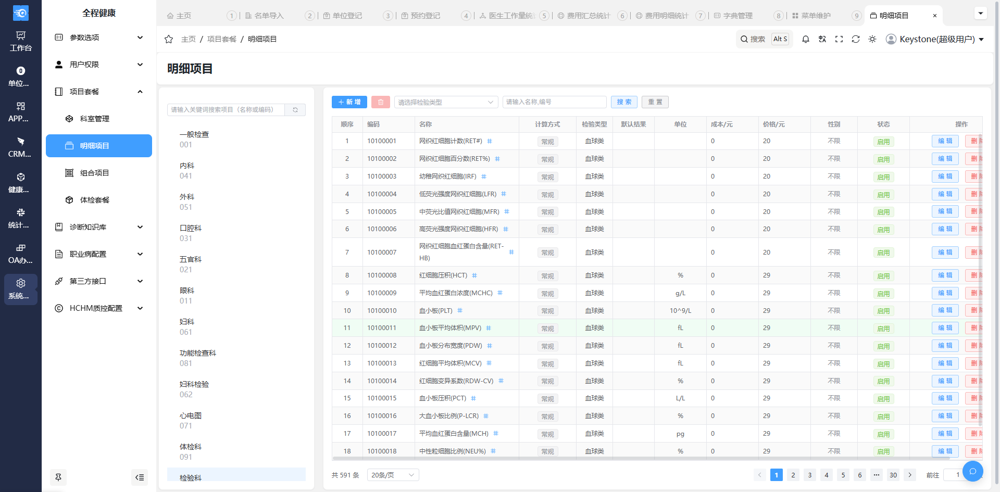
明细项目
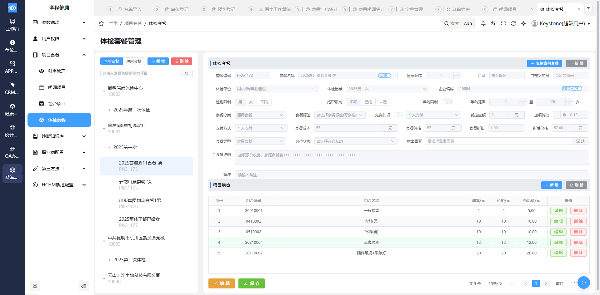
体检套餐
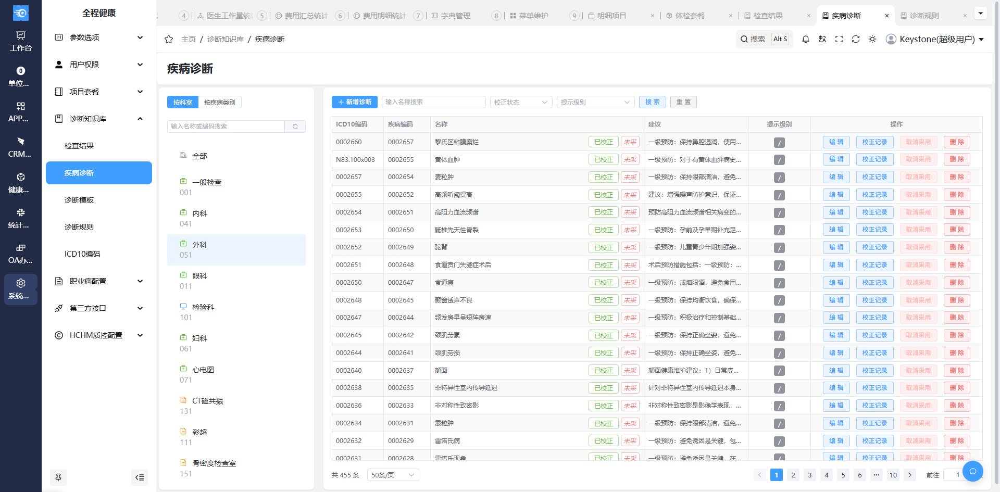
诊断管理
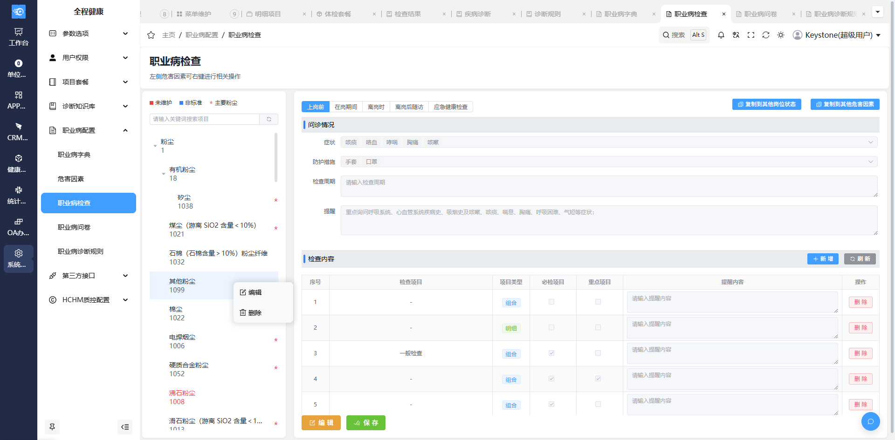
职业病检查
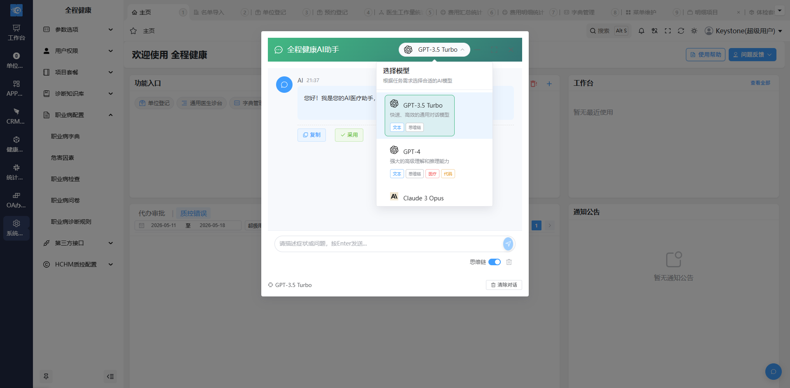
AI问询
核心业务模块与技术亮点
Vue3 组合式API
TypeScript 严格模式
异步并发优化
Vuex 状态分层
字符串金额计算
权限动态路由
系统整体采用模块化设计，字典数据驱动前端表单联动，权限控制支持角色级细粒度访问。通过前端工程化手段，实现构建效率提升30%以上。体检登记模块与折扣引擎复杂业务场景的稳定支撑，彻底杜绝了浮点数计算风险，目前系统已在高尚体检中心稳定运行超过一年。
项目二：体检系统管理移动端
项目时间：2024.05 - 2025.12
项目概述
这是一个基于 Vue3 + uni-app + TypeScript + uView UI 构建的移动端体检系统管理后台（删减版）
，旨在为体检中心管理人员提供便捷的移动化办公入口。系统支持套餐查看、预约查询等核心数据管理功能，
并根据登录人员的角色与权限动态展示对应的功能入口（如OA审批、财务报表等），
实现“千人千面”的权限化菜单呈现。项目采用H5打包方式发布，管理人员可通过手机浏览器随时随地进行业务处理。
👥 人员分布
后端开发：2人
前端开发：1人 （独立负责）
🎯 我的角色
前端核心开发 / 框架搭建 / 独立开发 / UI完善
我的责任
- 项目基础建设：独立完成项目技术选型与框架搭建，从零构建工程结构并完成H5打包发布配置，确保移动端管理后台的稳定运行。
- 界面与交互实现：自己构思UI进行页面开发，并在基础稿之上进行视觉美化与交互优化，提升移动端管理后台的操作体验。
- 登录与权限体系：设计并实现从用户登录鉴权到动态路由权限控制的完整方案，确保不同角色（管理员、财务、审批人员等）登录后只能访问对应权限的功能入口（OA审批、财务报表等）。
- 业务功能开发：完成套餐查看、预约查询、表单填写等核心管理功能的开发，并与后端紧密对接接口，保障数据交互的准确性。
- 钉钉集成：对接钉钉开放平台，实现OA审批流程的推送与同步，打通移动端管理后台与企业内部办公流程。
- 打包与发布：负责将项目打包为H5版本并完成发布部署，支持通过移动端浏览器直接访问使用。
项目业绩
📈 项目收益
作为面向体检中心内部人员（管理员、财务、审批人员等）的移动化管理工具，项目成功打破了传统PC后台的地域限制。通过手机浏览器即可随时处理套餐查看、预约查询及OA审批等日常事务，有效提升了外出、巡检等场景下的业务响应速度与内部运转效率。
作为面向体检中心内部人员（管理员、财务、审批人员等）的移动化管理工具，项目成功打破了传统PC后台的地域限制。通过手机浏览器即可随时处理套餐查看、预约查询及OA审批等日常事务，有效提升了外出、巡检等场景下的业务响应速度与内部运转效率。
⚙️ 我的贡献
- 项目从零搭建与交付：作为前端唯一负责人，独立完成技术选型、框架搭建、全部功能模块开发及H5打包发布，确保内部管理人员可即开即用。
- 细粒度权限管控：设计并实现基于登录身份的动态权限控制方案，不同角色（管理员、财务、审批人）登录后展示差异化功能入口（如OA审批、财务报表），保障数据访问安全。
- 钉钉OA审批集成：独立对接钉钉开放平台，实现审批推送与同步，处理多分支条件判断及状态流转逻辑，确保审批链路的准确性与实时性。
- 动态表单能力：针对不同业务场景下审批表单字段差异大的问题，实现表单配置化渲染与数据绑定，使界面能根据后端返回结构灵活呈现，无需重复开发。
- 界面体验优化：在UI稿基础上进行视觉美化与交互打磨，使移动端管理后台在操作便捷性与视觉效果上更适配管理人员的使用习惯。
🌟 我的收获
- 独立攻坚能力持续强化：作为唯一前端开发，再次经历从零到完整交付的全过程，对技术选型、工程搭建、排错调试、打包发布各环节形成了更深层的掌控力。
- 复杂审批流程的抽象与处理：在对接钉钉OA审批过程中，深入理解多分支审批流程的设计模式，掌握了将复杂业务流转抽象为清晰代码逻辑的方法论。
- 动态表单设计思维：通过实现动态表单的配置化渲染，学会将“变”与“不变”分离的设计思想，提升了高可配置业务场景下的架构能力。
- 协作与问题排查：在与后端协同制定数据口径、排查业务逻辑问题的过程中，显著提升了跨角色沟通与系统联调的效率。
📸 系统界面预览（点击图片可放大查看）
以下为移动端管理后台部分界面示意，点击任意图片可全屏预览。
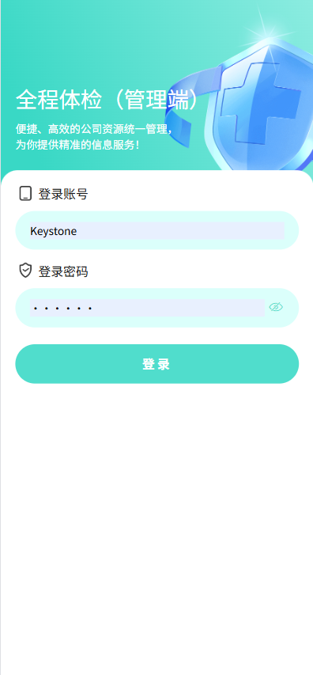
登录页面
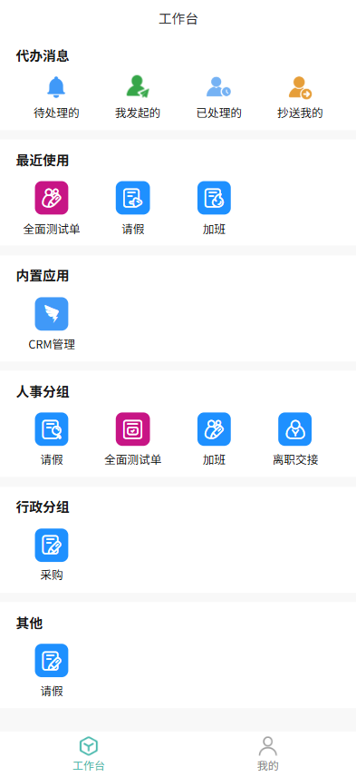
工作台
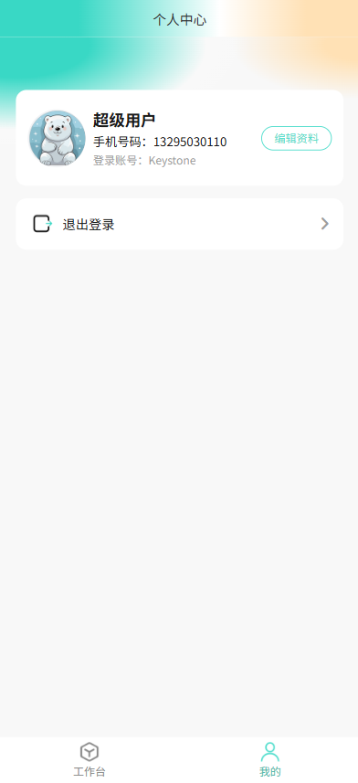
个人中心
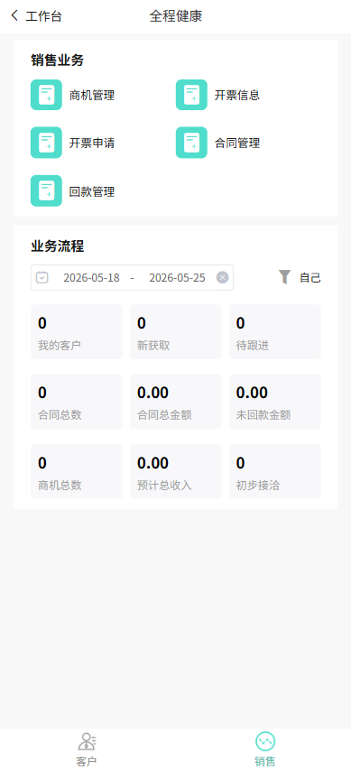
CRM管理
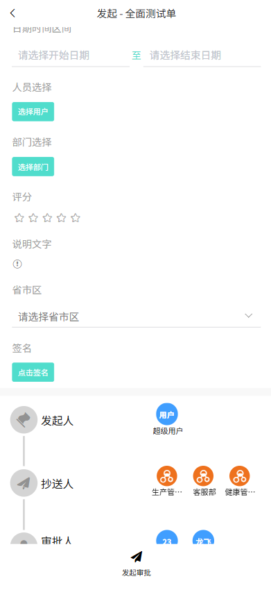
OA发起
核心业务模块与技术亮点
Vue3 组合式API
uni-app 跨端开发
TypeScript 严格模式
动态权限控制
钉钉开放平台集成
动态表单配置化
H5 打包发布
系统基于 Vue3 + uni-app + TypeScript 构建，根据登录账号权限动态控制内置应用呈现。独立对接钉钉开放平台，完成 OA
审批多分支流程的推送与同步。针对审批表单字段差异大的痛点，设计动态表单配置化渲染方案，实现“变”与“不变”分离，大幅降低重复开发成本。作为前端唯一负责人，从零完成技术选型、框架搭建、全部功能开发及 H5
打包发布，目前系统已在高尚体检中心稳定运行，有效提升了管理人员外出、巡检等场景下的业务响应效率。
项目三：全程健康体检APP
项目时间：2023.11 - 2025.10
项目概述
这是一个基于 Vue3 + uni-app + TypeScript + uView UI
构建的移动端体检APP，面向个人体检用户。用户可通过手机号登录APP，在线浏览体检套餐、自定义选择体检项目并完成购买支付，到体检中心后凭APP核验身份进行体检，体检完成后可在APP内查看电子体检报告。项目覆盖了从选购、支付、到检到报告查阅的完整体检服务闭环，致力于为用户提供便捷、流畅的一站式体检体验。
👥 人员分布
后端开发：2人
前端开发：1人 （独立负责）
🎯 我的角色
前端核心开发 / 框架搭建 / 独立开发 / UI完善
我的责任
- 项目从零搭建：独立完成APP前端项目的框架选型与工程搭建，制定移动端开发规范文档，为项目奠定可维护、可扩展的技术基础。
- 全流程功能开发：根据UI设计稿进行页面还原与交互开发，与后端紧密对接接口，实现从用户登录、套餐浏览、项目选购与支付、到店核验、健康问卷填写、报告查看的全链路业务功能。
- 多端兼容适配：负责程序在安卓与iOS双平台的兼容性调试与适配，解决不同机型、系统版本下的UI展示与功能差异问题，保障用户体验一致性。
- 合规与上线支撑：完善APP内隐私协议相关内容，满足应用商店合规要求；协助团队完成软件著作权申请，并配合完成APP在各大应用平台的上线发布流程。
项目业绩
📈 项目收益
项目已在华为应用市场、小米应用商店等安卓主流平台正式上架，iOS端通过企业内部签名分发方式触达用户，实现了体检服务从线下到线上的完整迁移。用户可通过APP一站式完成套餐选购、支付、到店核验及报告查看，显著优化了传统体检预约流程，提升了用户体验与体检中心的数字化服务能力。 （注：因公司内部原因，APP在离职前暂时从各平台下线）
项目已在华为应用市场、小米应用商店等安卓主流平台正式上架，iOS端通过企业内部签名分发方式触达用户，实现了体检服务从线下到线上的完整迁移。用户可通过APP一站式完成套餐选购、支付、到店核验及报告查看，显著优化了传统体检预约流程，提升了用户体验与体检中心的数字化服务能力。 （注：因公司内部原因，APP在离职前暂时从各平台下线）
⚙️ 我的贡献
- 从零到一交付：作为前端唯一负责人，独立完成项目技术选型、框架搭建、开发规范制定及全功能模块开发，一人承担了从登录、选购、支付到报告查看的全链路业务落地，确保了项目按时交付上线。
- 多端适配与发版：主导完成APP在安卓与iOS双端的兼容性调试，解决了不同机型、系统版本下的展示与交互差异，并配合完成华为、小米等安卓应用市场的上架审核，以及iOS企业内部签名分发的技术配置。
- 合规保障：独立编写并完善APP内隐私协议内容，满足应用商店合规要求；协助团队完成软件著作权申请的技术材料准备与提交。
- 体验优化：针对移动端体检选购流程长、支付环节敏感等特点，在交互细节与异常处理上做了针对性优化，保障了用户操作的顺畅与资金安全。
🌟 我的收获
- 独立解决问题能力显著提升：作为前端唯一开发人员，从技术选型、疑难排查到上线发版全程独立推进，遇到问题无法依赖他人，倒逼自己深入查阅文档、研究底层原理、寻找替代方案，极大锻炼了独立攻坚与自驱推进的能力。
- 移动端全流程技术积淀：掌握了uni-app跨端开发、多平台兼容适配、应用市场审核规则及上架流程，具备独立完成移动端项目从开发到发布全流程的实战能力。
- 全局思维与规范意识：独立制定开发规范文档的过程，让自己从单纯“写代码”提升到“为项目长远维护负责”的高度，学会以可维护性、可扩展性的视角审视每一个技术决策。
- 合规与版权意识：在编写隐私协议、协助软著申请的过程中，对移动端APP的法律合规与知识产权保护有了切身体会，补齐了技术之外的产品合规认知。
📸 应用界面预览（点击图片可放大查看）
以下为全程健康体检APP部分界面示意。
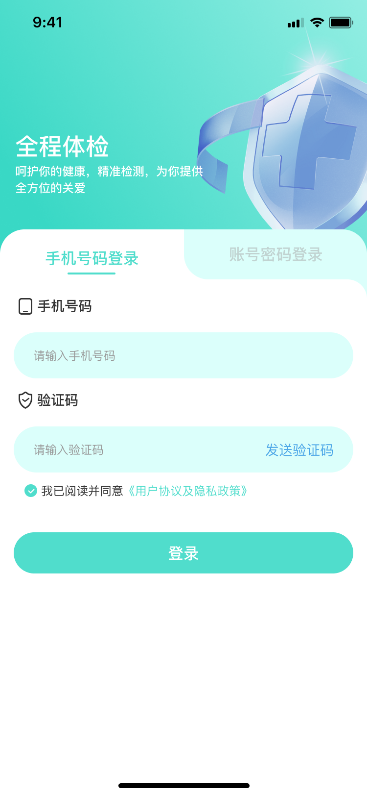
登录页
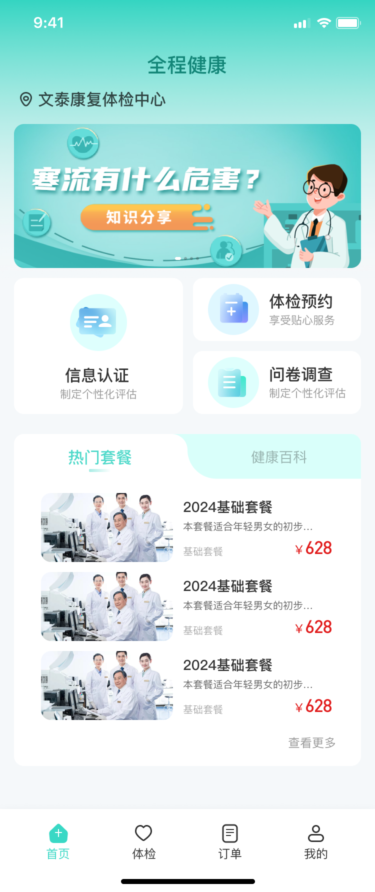
首页
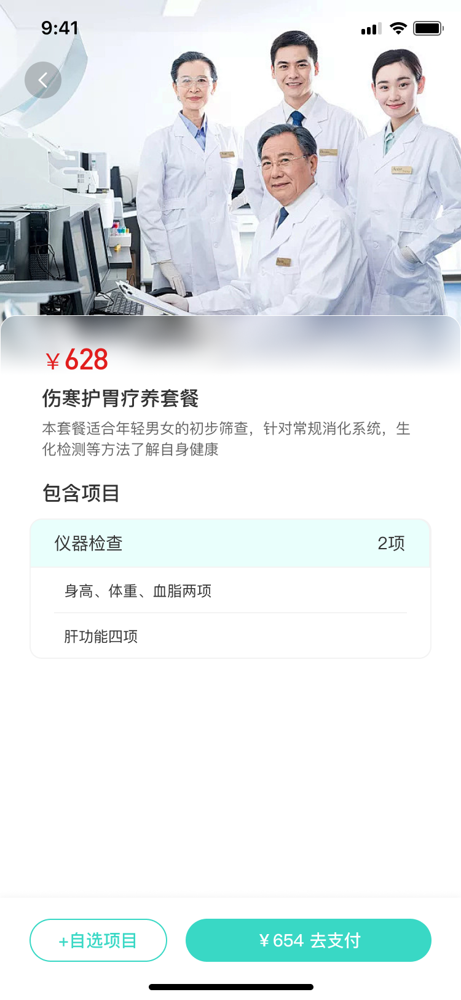
套餐详情
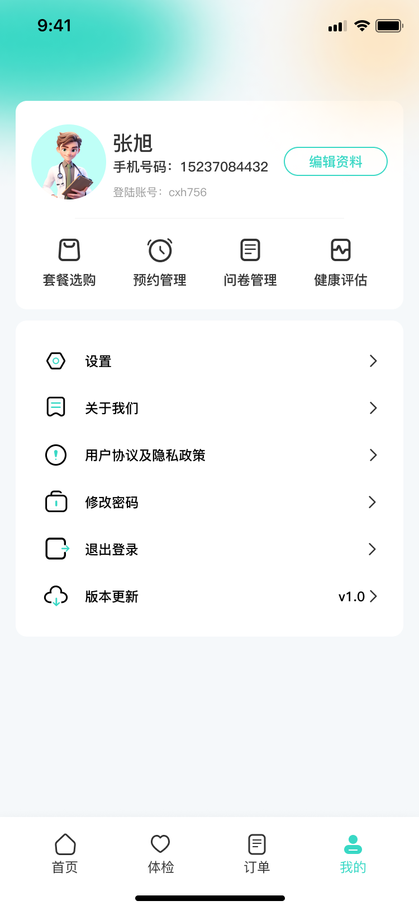
个人中心
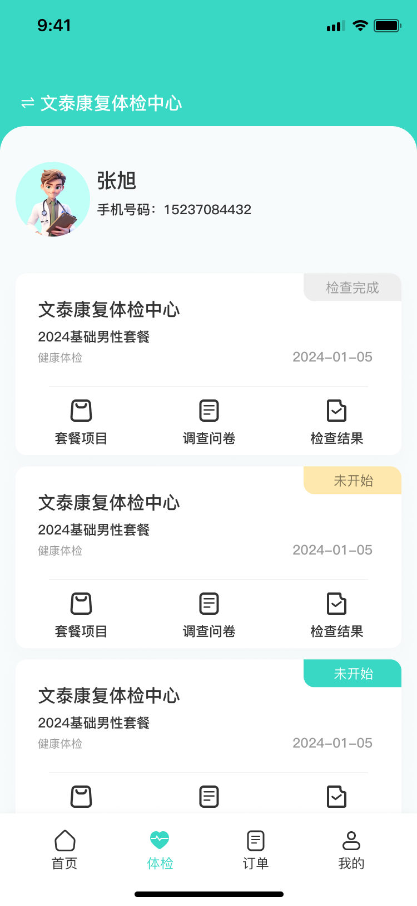
体检列表
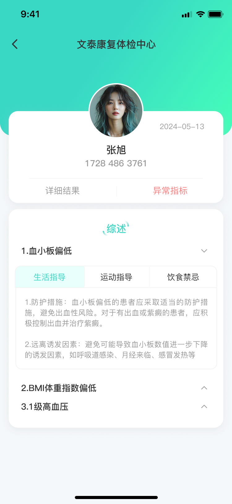
检查结果
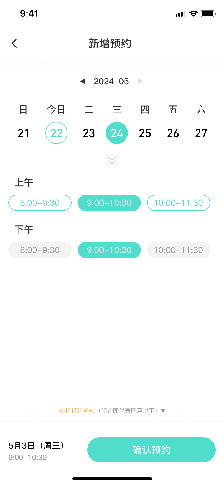
新增预约
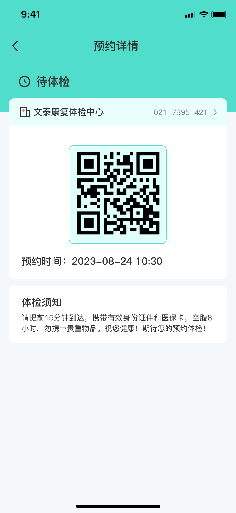
预约详情
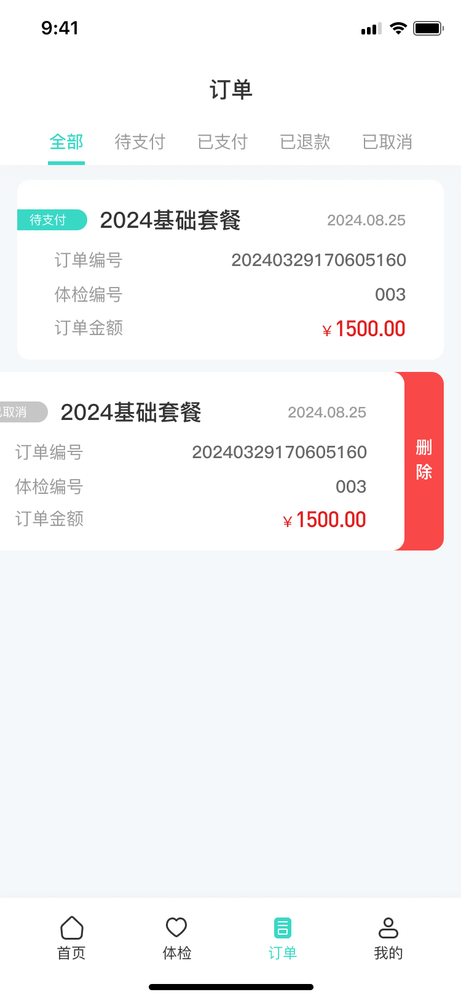
订单列表
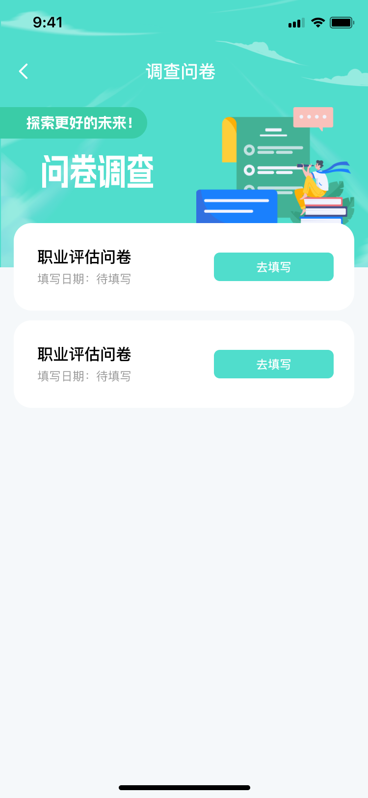
问卷调查
核心技术栈与业务亮点
Vue3 组合式API
uni-app 跨端开发
TypeScript 严格模式
uView UI 组件库
多端兼容（Android/iOS）
隐私协议合规
软著申请技术支撑
应用市场上架全流程
APP采用 Vue3 + uni-app + TypeScript
技术栈，一人独立完成从框架搭建到双端应用市场的全链路工作。实现了自定义套餐勾选、购物车状态同步、支付结果轮询、到店二维码动态核验等复杂交互；针对iOS与安卓差异进行专项适配（如安全区域、相机权限、支付回调）；并独立编写隐私政策及协助申请软件著作权，积累了完整的合规上架经验。项目完整覆盖体检“选购—支付—核销—报告”闭环，有效提升用户数字化体检体验。